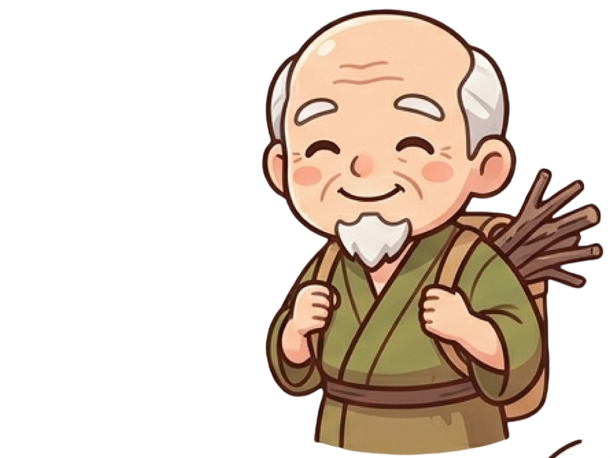
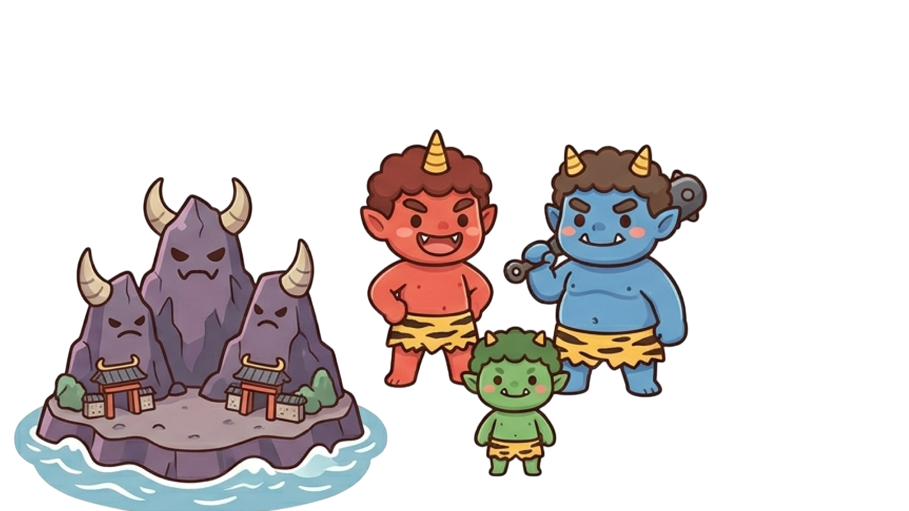
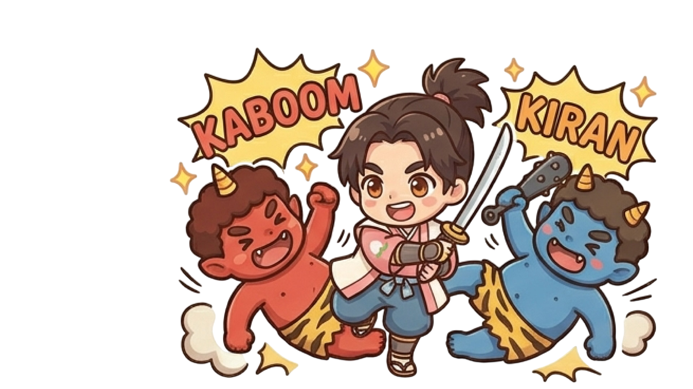
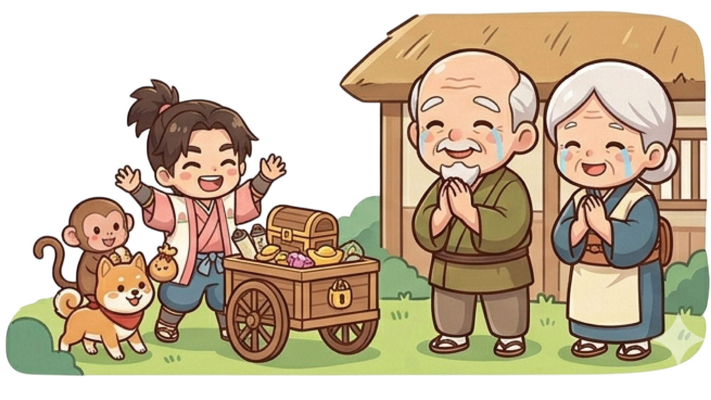

ちょっと待ってください。実はね・・・
この物語、最初から計算し尽くされてるんです。
― 桃が持つ意味 ―
桃には神聖な力が宿っていて古くは『古事記』でイザナギが鬼を撃退したとされる「最強の魔除け」であり、
中国神話でも再生の象徴とされてるんです。
― 太郎とは ―
昔の人にとって「太郎」は、単なる名前ではありませんでした。源氏の嫡男には「太郎」という名が受け継がれていましたが、その始まりは平安時代の英雄、八幡太郎こと源義家です。彼は「前九年の役」と「後三年の役」という過酷な戦いを経て蝦夷を平定した、まさに鬼をも凌ぐ勇猛さを誇るヒーローの代名詞だったのです。
― 柴刈りが生業 ―
おじいさんの「柴刈り」は、単なる仕事ではありません。資本も技術も持たない人が生き延びるために行う、 当時もっとも過酷な労働だったんです。
第二章：比類なき成長と志（成長）
桃太郎は健やかに成長し、村一番の力持ちになりました。
ある時、村に「鬼ヶ島に鬼がいて、悪さをしている」という噂が届きました。

それを聞いた桃太郎は、おじいさんとおばあさんに言いました。 「お父さん、お母さん。私は鬼を退治しに行ってまいります」● 実はね・・・
― 成長した桃太郎 ―
第一章で語られた桃太郎の誕生は、新しい希望の始まりを表していました。
そして第二章では、その希望が大きく育ち、人々を守る力へと変わっていきます。
昔話では、主人公の成長は単なる年齢の変化ではありません。
社会の願いや期待を背負う存在へ成長したことを意味しているのです。
桃太郎は、まさに人々の願いから生まれた英雄だったのかもしれませんね。
第三章：きびだんごの絆（交流）
旅立つ桃太郎に、おばあさんは日本一のきびだんごを持たせました。
道中、犬、猿、キジが次々と現れます。
桃太郎は持っていた団子を分け与え、彼らは桃太郎の仲間になりました。
 こうして、異なる力を持つ者たちが一つに結ばれたのです。
こうして、異なる力を持つ者たちが一つに結ばれたのです。
● 実はね・・・
― なぜ、サル、いぬ、キジが選ばれた ―
犬・猿・キジは、干支の方角と関係があるとされています。
鬼がいるとされた「鬼門」は北東（丑寅）の方角なんです。
これに対し、犬・猿・キジはその反対側の方角を守る動物と考えられ、
桃太郎の鬼退治を助ける仲間になったという説があるんです。
― きび団子である必要性 ―
当時の「きび（黍）」は、現代の白米よりも栄養価が高く、腹持ちが良いスーパーフードだったんです。 また、お供たちがそれを受け取ることで桃太郎との主従関係を結び、鬼退治の仲間となったことから、 「力の源」であると同時に「仲間の証」でもあったと考えられているんです。
第四章：鬼ヶ島の激闘（決意）

荒波を越えて鬼ヶ島へ着くと、
そこには恐ろしい鬼たちが待ち構えていました。
桃太郎は先頭に立ち、サルはひっかき、いぬは噛みつき、
キジは鋭い嘴（くちばし）で突き、鬼を圧倒しました。
ついに鬼たちは降参し、
「もう二度と悪さはしません」と誓いました。

● 実はね・・・
― 鬼とは ―
歴史的に見ると、鬼は「朝廷（政府）に従わない地方の勢力」なんです。
彼らがなぜ強かったかというと、山の中に住み、当時最高レベルの軍事技術だった「製鉄（鉄を作る技術）」を独占していたからなんです。
鬼の「金棒」は、その圧倒的な武力の象徴だったんですね。
第五章：静かなる凱旋と誇り（後日談）
桃太郎は宝物を積んだ車を引き、意気揚々と村へ帰りました。

おじいさんとおばあさんは涙を流して喜び、村には再び平和が訪れました。桃太郎が示した勇気は、この地の誇りとして長く語り継がれることとなりました。
● 実はね・・・
― 歴史の断片を紐解く ―
※ここでは、本物語の有力な伝承地の一つである「吉備（岡山県）」に伝わる説に基づき解説します。
桃太郎の物語は日本各地に伝わっていますが、吉備の地では、古事記や日本書紀に登場する「吉備津彦命（きびつひこのみこと）」が、異国から来た鬼・温羅（うら）を退治したという伝説がそのルーツであると考えられています。
温羅は決して単なる悪者ではなく、製鉄の技術を伝え、その地を豊かにした「王」であったという側面も語り継がれています。一つの物語の裏側には、勝者と敗者、そして異なる文化の衝突という、いくつもの「時の断片」が重なり合っているのです。